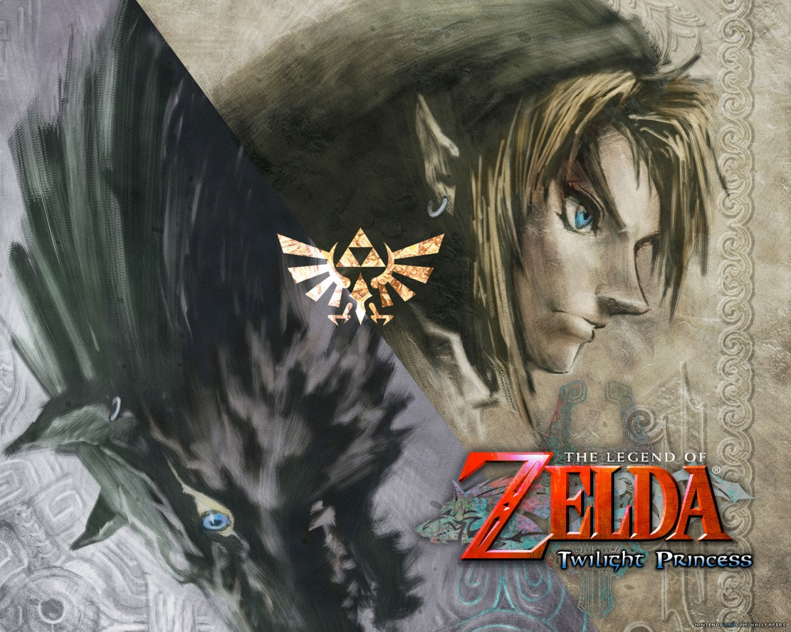

Qui suis je?
Le dernier projet que j'ai effectué est une bataille navale, en collaboration avec Evan Collet, un camarade de classe.
Cliquez ici pour télécharger le fichier
____________________________________________________________________________________________________________________________________________________________
Parcours Scolaire
Comme dit précedemment, je suis en 1ere Générale au lycée St Joseph à Lamballe, avec les spécialités Maths/Physique-Chimie/Numérique et Sciences informatiques. Cependant, je vais effectuer une réorrientation en 1ere STI2D afin de pouvoir réussir un bac Technologique, afin d'avoir plus de chances d'intégrer une classe de Bachelor Universitaire Technologique des Métiers du Multimédia et de l'Informatique (ou BUT MMI en abrégé).
____________________________________________________________________________________________________________________________________________________________
Compétences en Informatique/Monde Nuémrique.
Je suis plutôt polyvalent, je suis (plutot) doué en HTML/CSS, mais je le suis un peu moins en Python. En dehors de la programmation, j'aime le montage de PC, démonter/remplacer des composants, réolution de problèmes ou recherche d'alternative.
____________________________________________________________________________________________________________________________________________________________

Mes Passions
Comme j'ai pu le dire dans ma brève présentation plus haut, je sui passionné par l'informatique, les jeux vidéos, la programmation; donc tout ce qui peut toucher au monde du numérique. Je suis un grand fan de l'émulation sur pc ou téléphone: j'aime jouer à des jeux comme ceux des séries Mario, Zelda, Pokemon, Grand Theft Auto, mais aussi d'anciennes séries de jeux car j'aime beaucoup le Rétro Gaming (surtout les débuts de la 3D avec les débuts de la PlayStation). Pour l'informatique et la programmation j'aime beaucoup bidouiller des trucs car je suis curieux. J'aime beaucoup créer de nouvelles choses. C'est pour cela que j'aime la programmation Web, pour moi, créer des pages Web c'est comme créer une oeuvre d'art. Le HTML est le premier langage que j'ai appris seul. Aujourd'hui je suis fier de moi d'avoir réussi à manipuler ce langage, mais je le serai beaucoup plus si j'arrivais à bien maitrîser d'autres langages, dont le JavaScript avec lequel j'ai du mal.
____________________________________________________________________________________________________________________________________________________________
Diplomes/Certification D'Etat et emplois effectués
Je possède quelques diplomes / certifications d'Etat: le DNB (avec mention Tres Bien), l'ASSR1 et l'ASSR2 aisni que le BSR (Voiture Sans Permis/Scooter), afin de pouvoir me déplacer indépendamment. J'ai aussi été prid en stage dans une crêperie qui m'invite à venir travailler si je le veux pendant les vacances scolaires, preuve de mon efficacité au travail, sur le terrain.